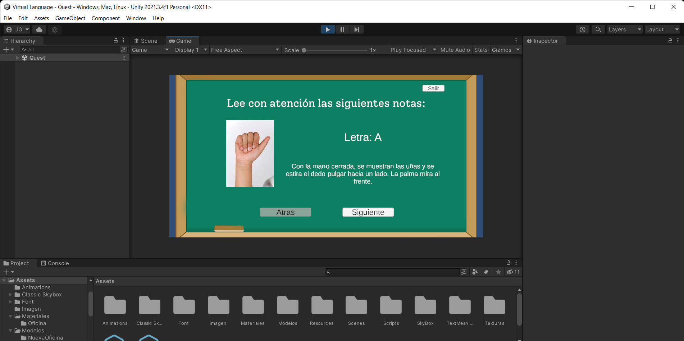
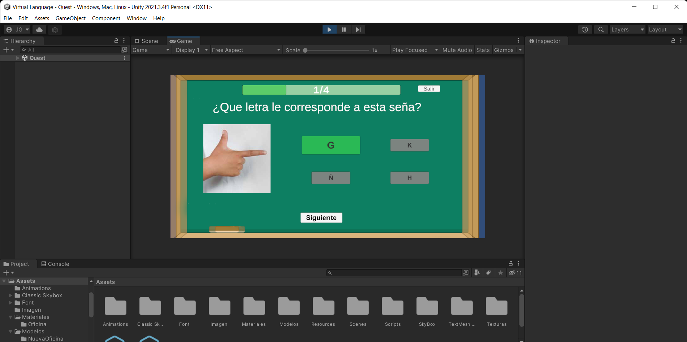

Celda de Entrenamiento KUKA
Proyecto realizado en Unity utilizando Realidad Virtual para simular y capacitar personal industrial para operar un robot "KUKA".
Leer másUn proyecto creado en la universidad para el curso "Seminario de tesis" para eseñar leguaje de señas.
Virtual Language fue un proyecto desarrollado para el seminario de tésis de la universidad, el cual, es una propuesta para que gente discapacitada pueda hacer uso del proyecto y resivir clases especialisadas tanto como de la parte teorica como la parte práctica. Dicho programa ofrece una parte de "Lecciones" donde el usuario podrá repasar toda la teoría del programa y así mismo poner a prubea sus conociemintos adquiridos a través de un exámen que notificará al usario su calificación inmediatamente. Se tenía planeado hace uso del Leap Motion, un aparato que hace uso de un sensor para proyectar las manos del usuario y tener una represntación virtual de sus movimientos, esto con la finalidad de poder hacer gestos y el pograma mismo daba una retroalimentación al usuario para determinar si el gesto fue el correcto.
Este proyecto, a pesar de que se detuvo y quedó incocluso es una buena porpouesta para poder tomar en cuenta a sectores que sufren de alguna discapacidad comunicativa. Siendo una opción para ofrecer una forma más autodidacta a las personas para aprander este lenguaje, que hoy en día es más que necesario ser inclusivos con la socidad en muchos aspectos, siendo la lengua de señas una de las más desacreditadas.
Proyecto realizado en Unity utilizando Realidad Virtual para simular y capacitar personal industrial para operar un robot "KUKA".
Leer más
Un videojuego 2D para móviles inspirado en el juego "Doodle Jump" y la popular obra de manga "Oyasumi Punpun" de Inio Asano.
Leer más
Un videojuego corto de terror dónde el propósito es juntar todas las esferas repartidas en el mapa para poder escapar del bosque.
Leer más